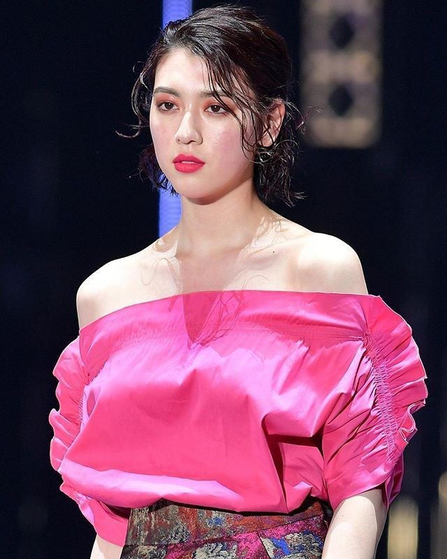
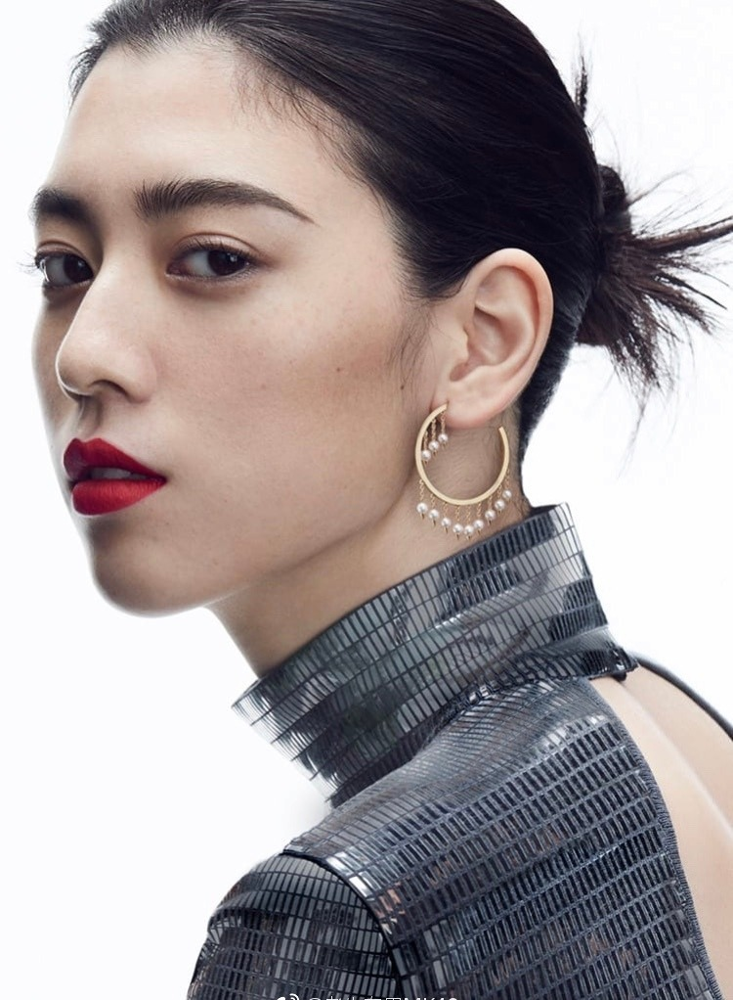
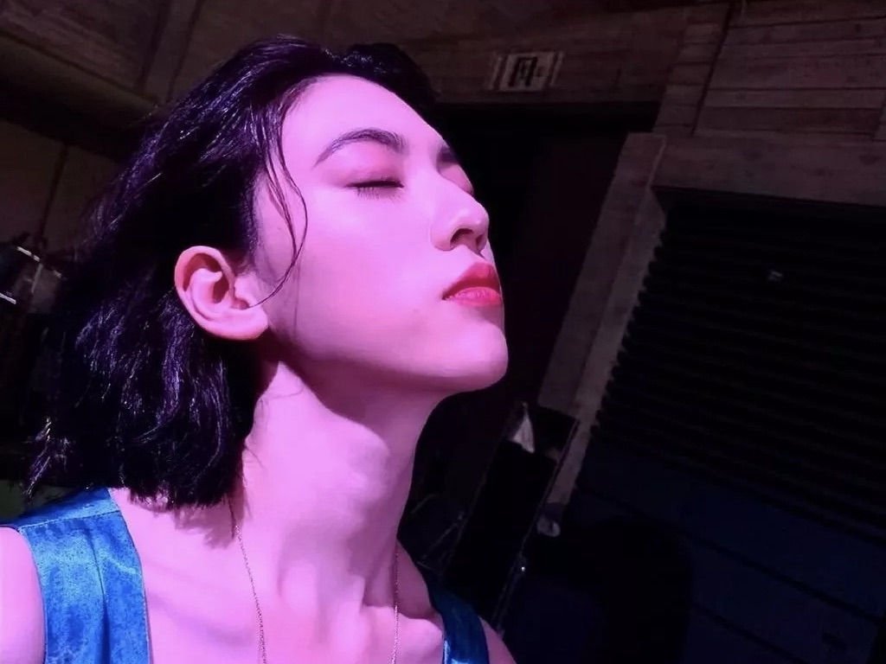

三吉彩花
三吉彩花（1996年6月18日－），日本女演员、模特，身高171公分，埼玉县出身，隶属Amuse经纪公司。杂志《Seventeen》专属模特。偶像团体樱花学院的前成员。
主要经历
- 小学三年级时，在原宿被星探发现，于是加入了日本大型艺能事务所Amuse，以童星身份参演多部影视作品
- 2008年，三吉通过了杂志《nico☆petit》事务所的审查，并在同年7月出版的夏天期刊首次以模特身份登上杂志
- 2009年，三吉毕业自川越市立武藏野小学校，后于翌年5月加入同属Amuse旗下的偶像组合樱花学院，并在同年8月18日通过杂志《Seventeen》的甄选审查，成为杂志专属模特。
- 2012年3月25日，三吉与樱花学院中另外两名同期“毕业”的成员拍摄毕业写真集后正式离开樱花学院，开始独自发展演艺事业，之后迅即于同年跟大泉洋及能年玲奈合演电影《大家早上好!》，并凭着该片夺得了翌年的每日电影奖新人奖。
- 2013年5月，三吉在温情电影《旅者的岛歌：十五岁之春》中首次担任主角，饰演一名因为其位于冲绳偏僻的家园南大东岛上没有高中而被逼转到那霸升学的中学生仲里优奈。三吉也凭此电影赢得了第35届横滨电影节的最优秀新人奖。
- 2015年10月，三吉初次担任连续剧女主角，参演改编自北条司漫画原作的同名电视剧《天使心》，在剧中饰演“香莹”。
- 2019年9月，因出演周杰伦的新单曲《说好不哭》音乐录影带，在华语地区获得了极大的关注度。
出演电视剧
- 非常老爸（2007年10月26日－12月14日、朝日电视台、朝日放送） 饰演 原田千里
- 告诉你如何找到梦想!（2008年3月8日、富士电视台） 饰演 泽田真矢（沢田マヤ）
- Pocky 4 Sisters 拿不到的信件“秘密的约束”（出せない手紙編 「ヒミツの約束」，2008年12月27日、BS-i） 饰演 宫下砂利（宮下サリ）
- 诱拐 KIDNAPPING（2009年8月2日、WOWOW） 饰演 佐山百合
- 热海搜查官（2010年7月30日－9月17日、朝日电视台） 饰演 东云麻衣
- 教我爱的一切 最终话（2011年3月28日、富士电视台） 饰演 吉村美樱
- 高中生餐厅（2011年5月7日－7月2日，日本电视台） 饰演 川瀬真奈美
- 理想的儿子 第3－最终话（2012年1月28日－3月17日，日本电视台） 饰演 丹波彩花（丹波さやか）
- 东野圭吾 悬疑故事 第8话（2012年8月30日，富士电视台） 饰演 笠井美代子
- 不结婚（2012年10月11日－12月20日，富士电视台） 饰演 佐仓麻衣
- 金田一少年之事件簿 狱门塾杀人事件（2014年1月4日，日本电视台） 饰演 式部清子
生活照片


